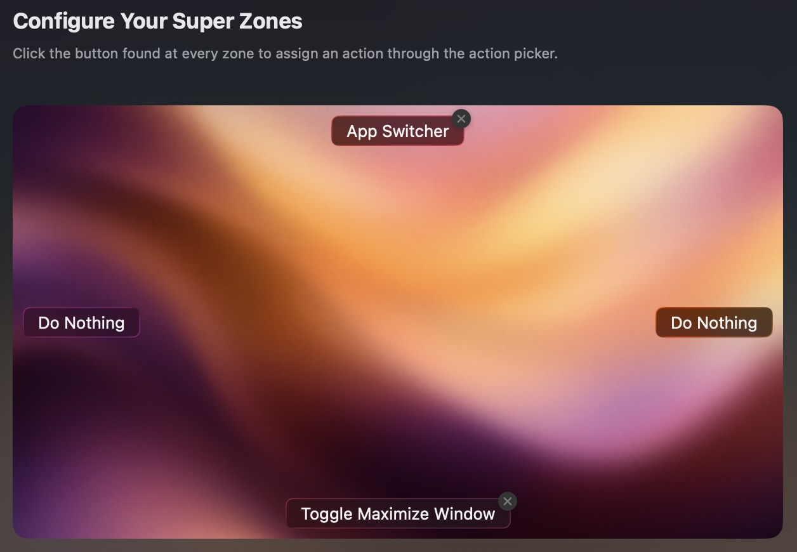
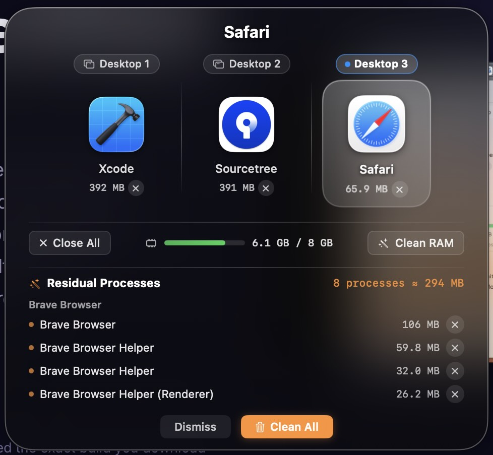
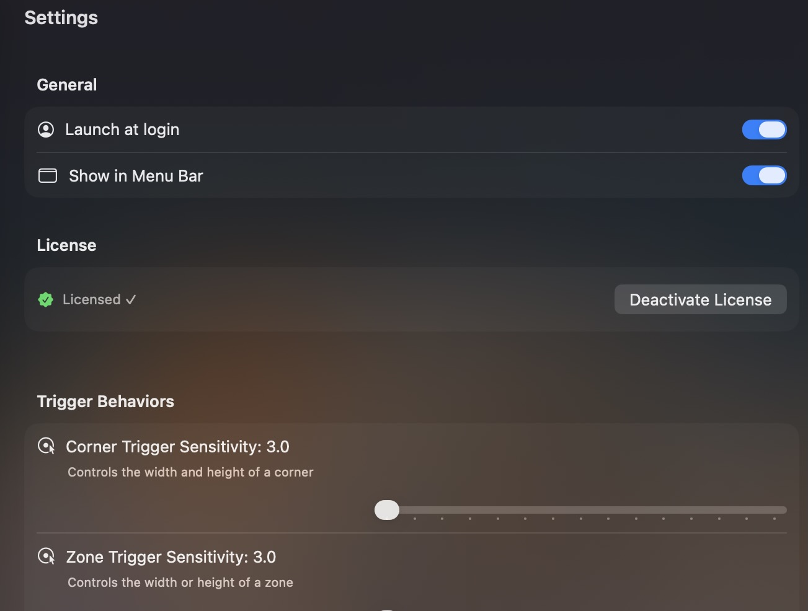
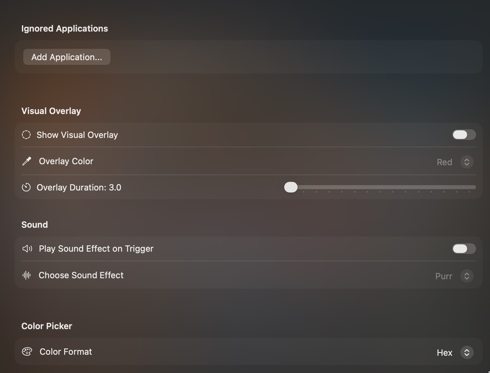

Zones&Corners
Supercharge your Mac's Corners & Screen Edge Zones
macOS Hot Corners, Reimagined for Power Users
Native macOS Hot Corners are limited to just four corners and a handful of static system actions. Zones&Corners unlocks your entire screen perimeter: adding 4 middle-edge zones, 76 built-in actions across 7 categories, an integrated Spaces App Switcher with RAM cleanup, Vision OCR, a screen Color Picker, and full automation via Shortcuts, AppleScripts, Terminal commands, and hotkeys.
Visual Feature Tour
Explore how Zones&Corners streamlines your daily macOS workflow across corners, edge zones, built-in tools, and trigger safeguards.

8 Corner & Edge Zones
Assign actions to top-left, top-right, bottom-left, and bottom-right corners alongside 4 middle-edge zones, with automatic macOS Hot Corner conflict detection.

76 Built-In Actions & Templates
Search and filter across 7 categories—System, App, Template, Tool, Capture, Media, and Window—or star actions into Menu Bar Favorites.

App Switcher, OCR & Color Picker
Browse running apps grouped by Spaces with live memory pressure and Clean RAM, extract on-screen text with OCR history, and pick colors in 5 formats.

Delays, Sensitivity & Ignored Apps
Prevent misfires by adjusting Corner and Edge Zone sensitivity curves, setting a Trigger Delay Timer (0–5.0s), and excluding specific apps via Ignored Applications.

Visual Overlays & Sound Feedback
Customize on-screen corner/edge indicator overlays across 8 highlight colors and durations, paired with 14 optional macOS system sound effects.
Everything Included
8 Screen Trigger Zones
Use the 4 screen corners plus 4 middle edge zones (top, bottom, left, right) — with automatic detection to avoid conflicts with existing macOS System Hot Corners.
Spaces App Switcher & Clean RAM
Pop open a visual HUD grouping running apps by macOS Spaces in MRU order, inspect memory pressure, close windows or all apps, and clean residual background processes.
Shortcuts, Hotkeys & Scripts
Run Apple Shortcuts, simulate custom keystrokes, launch apps, open websites, files, or folders, and execute AppleScripts or Terminal commands in one gesture.
OCR, Color Picker & Clipboard
Extract text from any screen region with Apple Vision OCR (plus 20-item history), sample colors in Hex/RGB/HSL/RGBA/HSLA, or check clipboard word and reading counts.
Ignored Applications
Add specific apps—such as full-screen games, creative suites, or IDEs—to your Ignored Applications list so edge and corner triggers pause automatically while they are active.
Visual Overlays & Sound Effects
Get instant confirmation with customizable on-screen edge/corner overlays in 8 highlight colors and adjustable duration, plus 14 macOS system sound options.
Window, Media & App Actions
Toggle maximize window with or without hiding the Dock, switch desktops, control Apple Music & volume, capture screenshots, or trigger Safari and Finder actions.
Trigger Delay & Sensitivity
Fine-tune independent Corner and Zone sensitivity sliders and configure a Trigger Delay Timer (up to 5 seconds) to prevent accidental brush-past triggers.
Menu Bar Utility & Favorites
Lives quietly in your menu bar with zero Dock clutter, Launch at Login support, and a Favorites submenu to run starred actions anytime without leaving your app.
Download & Setup
Zones&Corners requires macOS 13.0 (Ventura) or later and is available as a free demo (no payment info required).
1. Install the Notarized DMG
1. Download ZonesCorners.dmg.
2. Open the .dmg disk image and drag Zones&Corners into your Applications folder.
3. Launch Zones&Corners from Applications — it is Developer ID signed and Apple notarized, so it opens cleanly without Terminal workarounds.
2. Grant Permissions & Configure
1. Complete the brief welcome guide and grant Accessibility permissions in System Settings → Privacy & Security → Accessibility so Zones&Corners can detect cursor triggers, control windows, and simulate hotkeys.
2. If you trigger screen capture, OCR Text Extractor, Color Picker, or AppleScript/app-control actions, approve the standard macOS Screen Recording or Automation prompts when asked.
3. Open the menu bar icon anytime to jump to Corners, Zones, or Favorites.